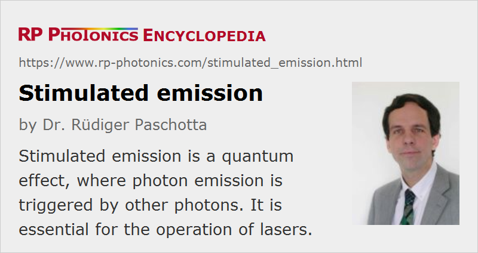

Stimulated Emission
Definition: a quantum effect, where photon emission is triggered by other photons
Opposite term: spontaneous emission
German: stimulierte Emission
Categories: lasers, optical amplifiers, physical foundations
How to cite the article; suggest additional literature
Author: Dr. Rüdiger Paschotta
If a laser-active atom or ion is in an excited state (quantum-mechanical energy level), it may after some time spontaneously decay into a lower energy level, releasing energy in the form of a photon, emitted in a random spatial direction. This process is called spontaneous emission. However, it is also possible that the photon emission is stimulated by incoming photons [1], if these have a suitable photon energy (or optical frequency); this is called stimulated emission. In that case, a photon is emitted into the mode of the incoming photon. In effect, the power of the incoming radiation is amplified. This is the physical basis of light amplification in laser amplifiers and laser oscillators.
The physics of stimulated emission can be described in the context of quantum optics, although there are also semiclassical descriptions (treating the interaction of an oscillating dipole with an electromagnetic field), and the original idea of stimulated emission was published by Einstein [1] before quantum mechanics were fully developed.
Note that the amplification effect of stimulated emission can be reduced or entirely suppressed in a medium where too many laser-active atoms are in the lower state of the laser transition, because these atoms are absorb photons and thus attenuate light. In a simple two-level system, laser amplification requires a so-called population inversion.
The rate of stimulated emission processes for an excited atom can be calculated as the product of the so-called emission cross section and the photon flux (number of photons per unit area and time). The photon flux can be calculated as the optical intensity divided by the photon energy.
In a laser operated well above threshold, stimulated emission dominates over spontaneous emission, and the power efficiency can be high. For this condition to be fulfilled, the incident optical intensity must be higher than the saturation intensity.
Questions and Comments from Users
Here you can submit questions and comments. As far as they get accepted by the author, they will appear above this paragraph together with the author’s answer. The author will decide on acceptance based on certain criteria. Essentially, the issue must be of sufficiently broad interest.
Please do not enter personal data here; we would otherwise delete it soon. (See also our privacy declaration.) If you wish to receive personal feedback or consultancy from the author, please contact him e.g. via e-mail.
By submitting the information, you give your consent to the potential publication of your inputs on our website according to our rules. (If you later retract your consent, we will delete those inputs.) As your inputs are first reviewed by the author, they may be published with some delay.
Bibliography
| [1] | A. Einstein, “Zur Quantentheorie der Strahlung”, Physikalische Zeitschrift XVIII, 121 (1917) (first prediction of stimulated emission) |
See also: spontaneous emission, laser transitions, photons, gain, transition cross sections, population inversion, optical amplifiers, lasers, Rabi oscillations
and other articles in the categories lasers, optical amplifiers, physical foundations
|  |
If you like this page, please share the link with your friends and colleagues, e.g. via social media: 


These sharing buttons are implemented in a privacy-friendly way! |
2020-03-19
How can a photon sent to an excited atom cause emission of another photon rather than causing the electron to get even further excited to the next energy state? And why are the two emitted photons coherent, have the same phase?
Answer from the author:
If there is a suitable higher energy state, such excited state absorption can indeed happen. The relative probabilities are determined by transition cross sections.
Coherence cannot be defined between just two photons, even if many talk as if it could, using naive models of photons. Also, the phase of one photon is undefined, therefore also the relative phase between two of them. I am afraid there is no simple answer to your question.